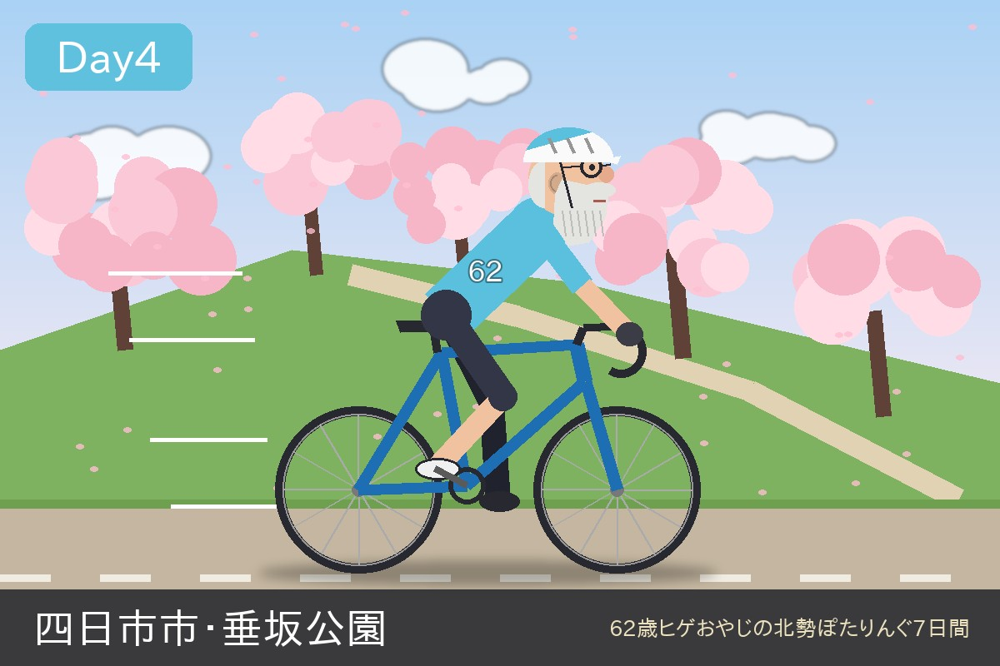

4日目は四日市市北部の垂坂公園（たるさかこうえん）。名前のとおり、少し坂を上った丘の上にある公園です。
垂坂公園は桜の名所としても知られる、緑の多い丘の公園。登り坂はありますが、上り切ったときの開放感は格別です。
62歳、無理は禁物。ギアを軽くして、きつくなったら迷わず降りて押します。押し歩きも立派なサイクリングだと思っています。
坂を上ったあとの水とおにぎりは、どんな高級料理にも負けません。ヒゲにご飯粒をつけないようにだけ注意です。
それではまた明日。安全運転で、ゆっくり行きましょう。
―― 62歳ヒゲおやじ
#サイクリング #四日市市 #垂坂公園 #坂道 #シニアライフ